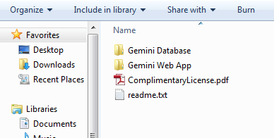
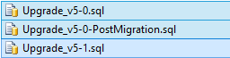
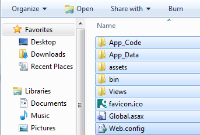
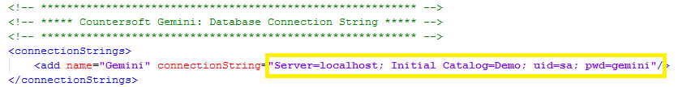
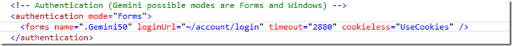
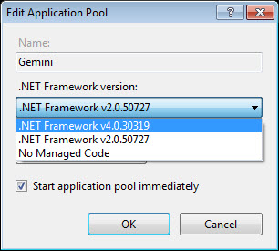
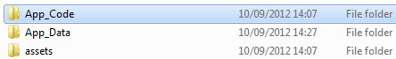

The zip file download contains both the Gemini web application and the sample database to get you going.
Note Please read the Migration Guide before you proceed any further. We recommend that you perform this upgrade on a test instance.
Please backup your existing Gemini SQL Database and Gemini web application folders before following this upgrade process. You can use SQL Management Studio to back up your database.
Please check you have everything ready for the installation process.
Unzip the Gemini zip file and you should see the contents as follows:

Make sure that you have selected the correct database.
Open and run the following scripts in SQL Management Studio:

Once open in SQL Management Studio, execute the scripts. Gemini will automatically upgrade the database to the latest version if the SQL user has the permissions to do so.
Copy the contents of the Gemini Web Application folder into your current web application folder (removing all existing files first):

Edit the new web.config file and put in the correct SQL Server user credentials for your Gemini database:

Remember to set your correct authentication settings:

Go to your IIS and change the previous Application Pool's .NET Framework version from 2.0 to 4.0.

Once changed your Gemini should now be upgraded to the latest release.
After installation you can navigate to the Gemini web application using your browser (e.g. http://myserver/gemini").
For complete administrative control, Gemini requires write access to the following THREE FOLDERS that is located where you installed Gemini:

App_Code folder, select Security tab, allocate Modify/ Full Control permissions to the EVERYONE groupApp_Data folder, select Security tab, allocate Modify/ Full Control permissions to the EVERYONE groupAssets folder, select Security tab, allocate Modify/ Full Control permissions to the EVERYONE groupNote Please read the Migration Guide before you proceed any further. We recommend that you perform this upgrade on a test instance.